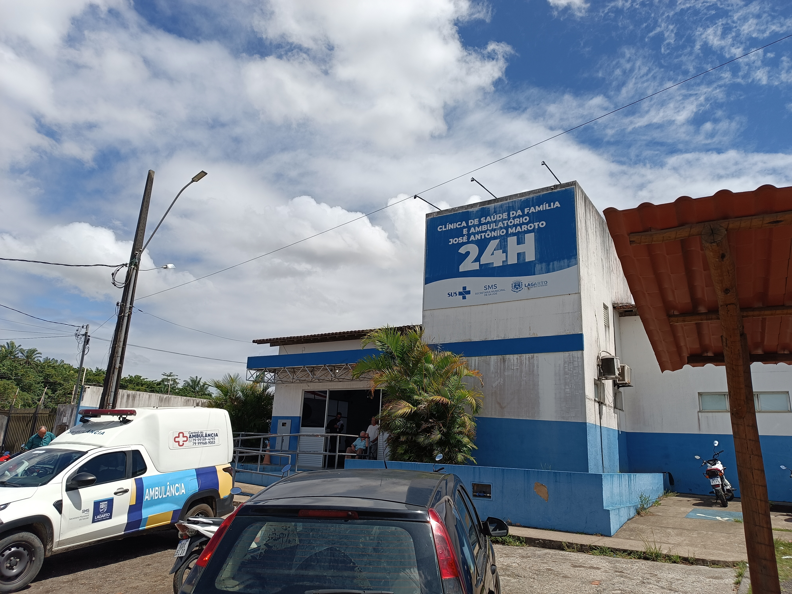
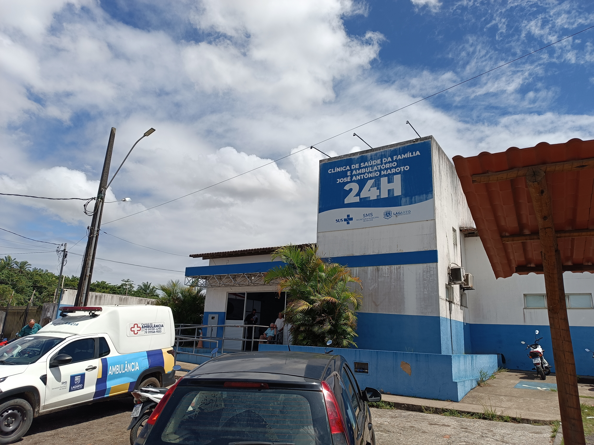

Serviços Essenciais
Para garantir que sua experiência em Lagarto seja segura e confortável, reunimos aqui os principais pontos de apoio da cidade. Abaixo, você encontra informações visuais e links de localização para o Terminal Rodoviário, os principais hospitais e a segurança pública.
Terminal Rodoviário
O ponto de chegada e partida. Localizado estrategicamente, conecta Lagarto às capitais vizinhas e cidades do interior. Aqui operam empresas como Rota e Coopertalse.
Fotos: Gustavo Anthony Ribeiro Santana (2026)
Ver Localização
Hospital Universitário (HUL-UFS)
Referência federal em média e alta complexidade. Equipado com urgência e emergência 24h, é a principal unidade de saúde da região centro-sul de Sergipe.
Fotos: autor
Ver Localização

Hospital N. Sra. da Conceição (Maroto)
Instituição tradicional e filantrópica no coração da cidade. Oferece atendimento de urgência e diversas especialidades médicas, com fácil acesso pelo centro.
Fotos: Gustavo Anthony Ribeiro Santana (2026)
Ver Localização 

Delegacia Cidadã de Lagarto
Sede da Delegacia Cidadã de Lagarto. Há também postos móveis próximos à praça da feira em dias de movimento.
Fotos:
Ver Localização